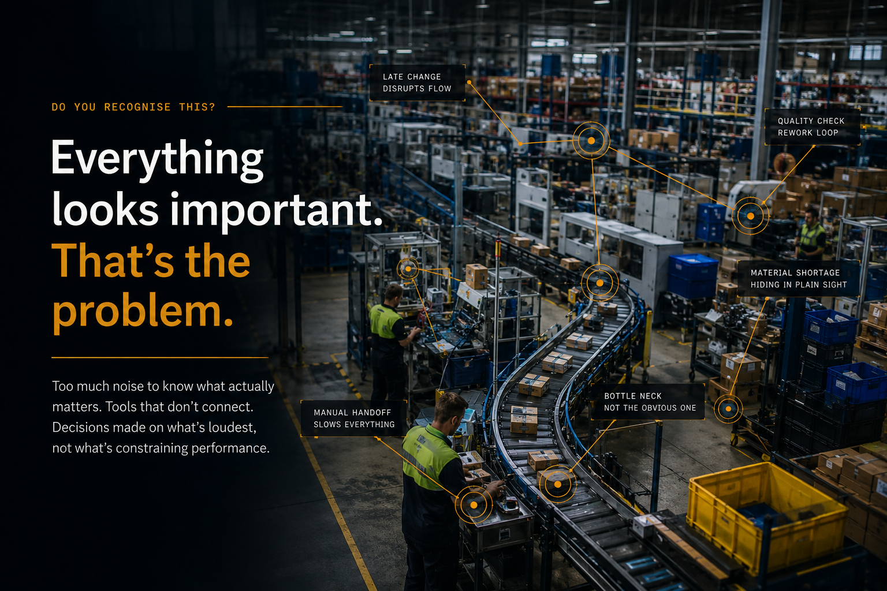

Opsteady — Operational Improvement System
Know what to fix first.
Opsteady establishes where your site actually stands, what deserves attention first, and gives your own team the tools and guidance to act on it — no consultant, no sales call.

Do you recognise this?
Late finishing.
Tribal knowledge running the floor.
Firefighting instead of fixing.
The wrong first fix.
Most improvement effort fails for the same reasons, on every site: too much noise to know what actually matters, tools that don't connect to each other, and a habit of fixing whatever's loudest instead of what's really constraining output.